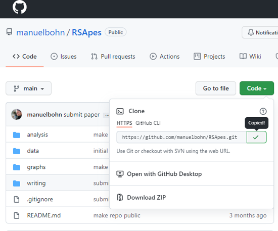
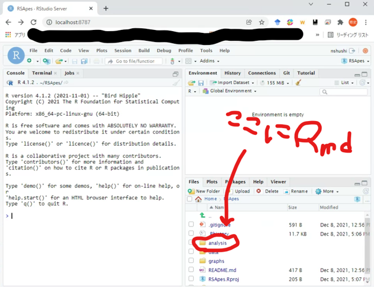
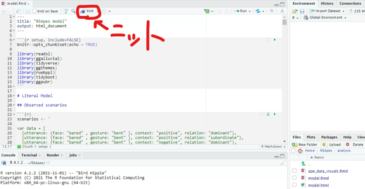
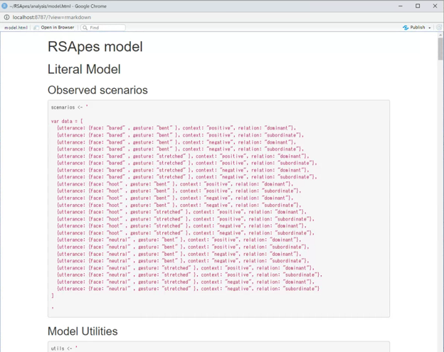
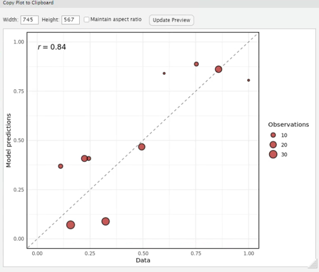
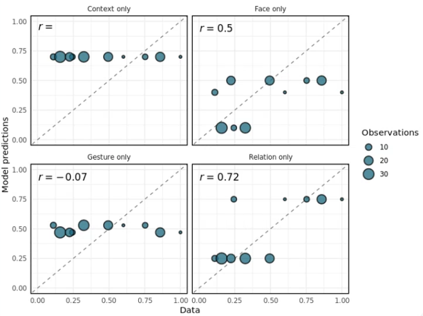
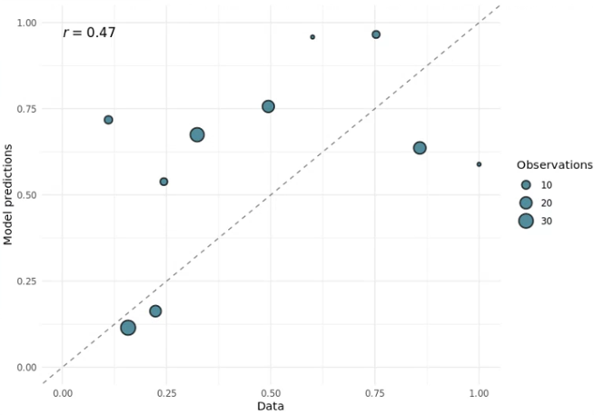

本記事は、Open and Reproducible Scienceアドカレ2021の8日目の記事です。昨年はGithubをつかえというアクの強い記事を書いたので、今年もGithubに関する記事を書きます。
なにをするのか
最近読んでおもしろかったコミュニケーションの計算論モデルに関する論文 (Bohn et al., 2021, PsyArXiv)がGithubで情報を公開しているので、それを再現しましょう。
Bohn et al. 2021はどういう論文？
- 人の言語コミュニケーションに適用される理性的言語行為フレームワーク (Rational Speech Act framework: RSA) を類人猿のコミュニケーションに適用しよう。
- 推論モデルの予測がチンパンジーの行動データと合致。
- チンパンジーの (推論の結果として生じる) 接近・回避行動は、対象個体との関係性と関連が高く、次いで表情と関連している (モダリティ間の相対的重要性から複数のモダリティを対象とするコミュニケ―ションの検討が必要であることを指摘)。
大体こんな感じ。詳細は読んでください。
計算論モデルの詳細
ここでは対象論文で用いる数式を簡単に紹介しておきます。面倒な人は一気に読み飛ばしてください (ここは自分用のメモに近いです)。まず、ある特定の\(発話u\)が所与の時にその発話者が\(意図i\)を持っている確率を\(P(意図i | 発話u)\)とします。これは以下のように定義されます：
\[P(意図i | 発話u) \propto P(発話u | 意図i)P(意図i)\]
このとき\(P(意図i | 発話u)\)は、意図iが所与のときの\(発話u\)が生じる尤度\((P(発話u | 意図i)\), チンパンジーの例：親和意図を持った時に腕を上げる) とそもそも\(意図i\)を持つことに関する事前確率 (\(P(意図i)\), 例：親和意図を持つ) に分解できます。
今回の例は類人猿のコミュニケーションが対象なので、\(発話u\)は\(ジェスチャーg\)と\(表情f\)に分解して以下のように尤度を定義します：
\[P(発話u | 意図i) = P(ジェスチャーg, 表情f | 意図i) = \mathcal{L}(ジェスチャーg, 意図i | \theta_{g})\mathcal{L}(表情f, 意図i | \theta_{f})\]
ある信号 \((g, f)\) とある意図 (\(i\)) の意味空間に関する確率的マッピングを\(\theta\)としてここでは表現しています。\(\mathcal{L}(表情f, 意図i | \theta_{f})\)は「\(表情f\)の中でも\(意図i\)と確率的に対応する\(表情f\)の表現なんだなぁ」くらいに理解しといてください。少なくとも僕の理解度はその程度です。
さて、発話は意図の事前確率 (\(P(意図i)\)) によって文脈化されるので、これは個体間の\(社会関係s\)とその\(発話文脈c\)の関数として考えることができます：
\[P(意図i) = P(意図i | 文脈c, 社会関係s) = \rho_c \rho_s\]
このとき\(\rho\)は文脈および社会的関係の方向性と強度に関するパラメータとします。
観測データの詳細 Oña et al., 2019
次に推論モデルによる予測と比較するための観測データに関する詳細は以下の通りです。
・対象：半野生のチンパンジー72人
・データ：信号とその受け手による反応 (人によるCoding)。
・ジェスチャー：腕を伸ばす・曲げる (\(\theta_g\))
・表情：真顔・歯むき出し・とんがり唇 (\(\theta_f\))
・文脈：ポジティブ・ネガティブ (\(\rho_c\))
・送り手との関係性：支配・従属 (\(\rho_s\))
・相互作用の結果：接近・回避 (受け手による意図iの解釈と想定)
数理的表現の設定 (先行研究と経験に基づいてるけど恣意的な設定であることは筆者も認めてる)
・目的変数 (相互作用の結果)：0-1の値 (\(0-0.5 = 接近；0.5-1 = 回避\))
・ジェスチャー：腕を伸ばす = 少しネガティブ (\(\theta_gs = 0.53\)); 腕を曲げる = 少しポジティブ (\(\theta_gb = 0.47\))
・表情：真顔 = 完全中立 (\(\theta_fn = 0.5\)); 歯むき出し = 少しネガティブ (\(\theta_fb = 0.6\)); とんがり唇 = かなりネガティブ (\(\theta_ff = 0.9\))
・文脈：ネガティブ (\(\rho_cn = 0.7\)); ポジティブ (\(\rho_cp = 0.3\))
・関係性：支配 = ネガティブ (\(\rho_sd = 0.25\)); 従属 = ポジティブ (\(\rho_ss = 0.75\))
さて、素材がそろいました。これらのモデルによる予測と実データの対応を自分のPCで確認してみましょう。
GithubからあなたのPCへ
ここでは、Bohn et al., 2021が用意してくれたGithubのリポジトリから情報を取得します。
昨年の記事では、Githubからgitを使ってリポジトリを持ってくる解説をした（したのか？）けど、今回はWindowsのWSL2(いわゆる仮想環境でのUbuntu)でRstudio serverを立ち上げます。
Windowsの人は、関西学院大学柏原さんの記事を参考にしてWSL2を使ったRserverの環境を構築しなさい。
「な、なぜそんなことを…。」と思われるかもしれませんが、このリポジトリではRwebPPLと呼ばれるパッケージをインストールする必要があり、このパッケージはUbuntuとMacしかサポートしてないからです (だからWindowsじゃなかったらメキシコ流のやり方でおっけーです)。ちなみにWebpplはJavascriptに埋め込まれた機能豊富な確率的プログラミング言語です。
Rstudio serverが立ち上がったら「File」→「New Project…」→「Version Control」→「Git」→「”Repository URL”に下画像のようにコピーした情報を入力して”Create Project”」で筆者が提供していた環境を丸々ローカルな環境で再現できます。

上手くいけば以下のような画面が出てます。

Filesウィンドウ内の「analysis」を開いて「model.rmd」を開いてみましょう。RmdとはRmarkdownファイルのことで、Rコードが埋め込まれたイカしたドキュメントファイルです。
「model.rmd」を無事開けたら、まずはインストールされてないパッケージを適宜インストールしてください（rmdファイル開いたら、「おい、このパッケージがないぞ！」と言われるので適宜必要パッケージをインストールしてください）。ただし、RwebPPLは、node, npm などをターミナル上(sudoなど)でインストールしたうえで
devtools::install_github("mhtess/rwebppl")でインストールしなければならないので注意しましょう。
ふるえるぞハート！燃えつきるほどニット！
お疲れ様です。結果を再現しましょう。下の画像の位置にあるknitボタンを押しましょう (もしくはCtrl+Shift+K)。すると自動で全てのRコードが回って、htmlファイルを出力してくれるはずです。

最終的には以下のような画面が出るはずです。Congratulation！
逐一読んでいけば、どういうデータを使ってどういうモデルを回しているかが理解できるはずです。ちょっと量がありすぎるのでこの記事では逐一解説はしませんが…。

…で、結果はどうなのよ？
model.rmd：Lines 166~247が全体モデルとしての結果と対応したコードになります。結果としては、下図の通り今回用いたパラメータ設定によるモデルの予測は観測データとかなり似た結果が得られたようです(y軸がモデルの予測、x軸が実際のデータ)。

表情、ジェスチャー、文脈、関係性のみ (model.rmd：250-325 linesでパラメータの設定) でモデルを作成した場合の結果が以下の通りです。

図の通り、関係性がとても大事だよ。表情も回避行動の予測ができなくはないよ（パラメータ設定段階で自明ですが…）ということがわかります。
このRmdファイルをニットするまでは「よーし、パパ、他のパラメータ設定も試してみちゃうぞ～」と思ってたんですが筆者が事前に別のパラメータ設定（ジェスチャーと表情の重要性を反転させた設定：ジェスチャーの意味の強度を増やし、表情の重要度を減らす）を試した結果もちゃんと確認してました。
その結果、データとモデルの予測はいまいちであったことも報告されており、ジェスチャーの相対的重要度はいまいちなのが現実を反映していそう、というインプリケーションも得られたっぽいです。

感想：Open Scienceの大変さ
WSL2を導入する必要性の話からも分かる通り、ある論文の解析結果を再現する、というのは結構大変な作業であることがままあります (恥ずかしながらWebPPLという言語があることもこれまで知りませんでしたし…)。
現在の査読案件でも、本文内に「データと解析はOSFにアップロードしているので結果を再現できますよ！」と書かれていたので、解析の詳細を確認するためにアップロードされたRmdファイルを開いた結果、必要なデータファイルがアップロードされてなかった…なんてこととかも経験しました（採択・出版された論文でもこういう事例がないこともない、いやそれは筆者に連絡しろよって話なんですけど）。
いろいろと仕組みが必要だなぁと感じたので、イイ感じの情報があればまた共有します。みんなも耳寄り情報はオープンにしてくれよな！
ほな！